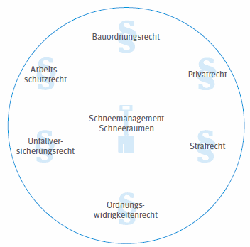

Haftungsrisiken im Zusammenhang mit kritischen Schneelasten können sich sowohl aus der Planung als auch bei der Durchführung durch Handeln oder Unterlassen ergeben. Sie resultieren aus Personen- und/oder Sachschäden, die z. B. folgende Ursachen haben können:
Die Rechtsgrundlagen der Haftung soll die folgende Abbildung verdeutlichen:

Abb. 1 Rechtsgrundlagen der Haftung
Die zutreffenden Rechtsquellen Bezug nehmend auf die beteiligten Personen sind in nachfolgender Tabelle dargestellt:
Tabelle 1 Rechtsquellen mit Bezug auf die beteiligten Personen
| Rechtsgrundlage | Rechtsnorm | §§ | Bauherr/in Eigentümer/in Betreiber/in |
SiGeKo | Planer/in Architekt/in |
Bauleiter/in | Unternehmer/in | Aufsichtführende/r |
| Privatrecht | BGB | § 823 § 836 |
x |
x | x | x | ||
| Arbeitsschutzrecht | ArbSchG ArbStättV BaustellV |
§§ 25, 26 § 9 § 7 |
x |
x |
x |
x x |
x | |
| Bauordnungsrecht* | LBO | Teil XX | x | x | x | |||
| Unfallversicherungsrecht | SGB VII | § 104 § 110 |
x |
x x |
||||
| Ordnungswidrigkeitenrecht | OWiG | § 130 | x | x | x | |||
| Strafrecht | StGB | § 319 | x | x | x | x |
* Aufschlüsselung der unterschiedlichen Zuordnung in den LBOs (siehe Anhang 1).